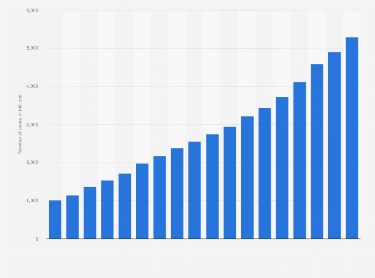

Introduction
Looking briefly at the application of python and its code size people often assume python as the future of programming but can we accept that it can entirely replace c / c ++ ?
Before giving a fixed one word answer as Yes/No let’s see what the world is demanding and what are these language offering.
After internet became the new sensation to the digital world the term related to internet like web, online, data, cyber security and a lot are becoming the most searched and most practiced word in the world.
It’s obvious to be curious about the thing that is actively utilized by 4.5 billion users. So looking at this fact it is obviously to stick to web and other web related stuff and this is one of the main reason why people are more inclined towards python rather than c/c++ .
Confused? Don’t worry, let’s see the popular application of python.
Read more...
Application of Python
1. Web development
 The one of the biggest reason to choose python is web-development because it can be used to create web application at a rapid rate.
Python is used because of its security, scalability and convenience.
Django, Flask are some of the most popular libraries of python in web development.
Click here to learn more.
The one of the biggest reason to choose python is web-development because it can be used to create web application at a rapid rate.
Python is used because of its security, scalability and convenience.
Django, Flask are some of the most popular libraries of python in web development.
Click here to learn more.
2.Machine Learning and AI
 Machine learning and AI are the new talk of new town,
the internet and are one of the most promising career for the future and python
are regarded as the best in this field since they are very much easy to calculate and
evaluate mathematical and scientific evaluation due to most developed libraries like Numpy, Pandas etc
Click here to learn more.
Machine learning and AI are the new talk of new town,
the internet and are one of the most promising career for the future and python
are regarded as the best in this field since they are very much easy to calculate and
evaluate mathematical and scientific evaluation due to most developed libraries like Numpy, Pandas etc
Click here to learn more.
3.Data science and Data visualization
 A part from using algorithm and model designing python is really a great tool to use it for data slicing, manipulation and
visualizations due to its libraries like matplolib , pyplot etc.
Wait! Aren’t these application enough to prove python as superior?
The web, AI and more aren’t they more than enough to self-explain the question’s answer.
In one of the context yes they are. The internet admits the excellence of this programming
language as having a very good and less steep learning curves. I am too a great fan of this
language but internet can’t just rely on Python.
It may be the number one choice in web and other stuffs but isn’t preferred in many other field.
And looking at the code size it’s unfair to compare a scripting language with a non- scripting language.
The main reason to use c/c++ over python is its remarkably fast speed .c/c++ language is very much used
in developing of games as it allows procedural programming for intensive function of CPU and greater
control over hardware. Looking at the real world application of c/c++ following are the application areas that python are not preferred.
Click here to learn more.
A part from using algorithm and model designing python is really a great tool to use it for data slicing, manipulation and
visualizations due to its libraries like matplolib , pyplot etc.
Wait! Aren’t these application enough to prove python as superior?
The web, AI and more aren’t they more than enough to self-explain the question’s answer.
In one of the context yes they are. The internet admits the excellence of this programming
language as having a very good and less steep learning curves. I am too a great fan of this
language but internet can’t just rely on Python.
It may be the number one choice in web and other stuffs but isn’t preferred in many other field.
And looking at the code size it’s unfair to compare a scripting language with a non- scripting language.
The main reason to use c/c++ over python is its remarkably fast speed .c/c++ language is very much used
in developing of games as it allows procedural programming for intensive function of CPU and greater
control over hardware. Looking at the real world application of c/c++ following are the application areas that python are not preferred.
Click here to learn more.
Conclusion
From this blog, I want to conclude that these language are one of the biggest and most powerful
language and have their own application field and can’t be replaced one by another.
If I have to suggest someone to choose one over other I would like him/her to start with python due to
less steep learning curves and gradually shifting towards c/c++ . The most to do is to build programming
mind and problem solving skills because these language are just tools to solve those real life problem.
so participating in various coding event and learning algorithm is the most. And after having little confident on DSA and some
language you can choose and stick to python if you have interest in AI, ML, Data Science and Web otherwise stick to
c/c++ and other languages for various game development , embedded system designing ,and a lot of fields .